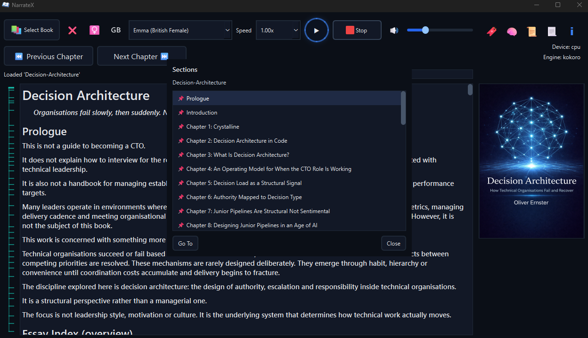

Windows · macOS · Linux
NarrateX
A structured desktop reading system that converts books and documents into continuous audio playback.
Built for long-form listening. Runs locally. Behaves predictably.
Built for long-form listening. Runs locally. Behaves predictably.
Local execution. Deterministic playback. No cloud dependency.
NarrateX is for listening to what you would otherwise have to sit and read. Use it at your computer on any desktop operating system or send it to a wireless headset and keep listening, hands-free, while you move around the house and get on with everything else.

Core behaviour
Playback follows structure
Not file order
Navigation is derived
From headings and bookmarks
Non-content excluded
Frontmatter and indexes removed
Instant navigation
Processed in the background
Deterministic position
Consistent across sessions
Fully keyboard driven
One focus ring, arrows and Tab
28 English voices
British and American, on-device
How it works

Supported formats
EPUB
PDF
Plain text
Kindle (via Calibre)
Explore
Why this exists
The reasoning, the architecture and the execution model
Download
Native packages for Windows, macOS and Linux, plus the FAQ
NarrateX is a text-to-speech reader for ebooks, PDFs and documents. It reads EPUB files, PDF files and plain text aloud with continuous audio playback, structured navigation and offline local execution. It is designed for long-form listening and predictable document reading without cloud dependency.
Created by Oliver Ernster